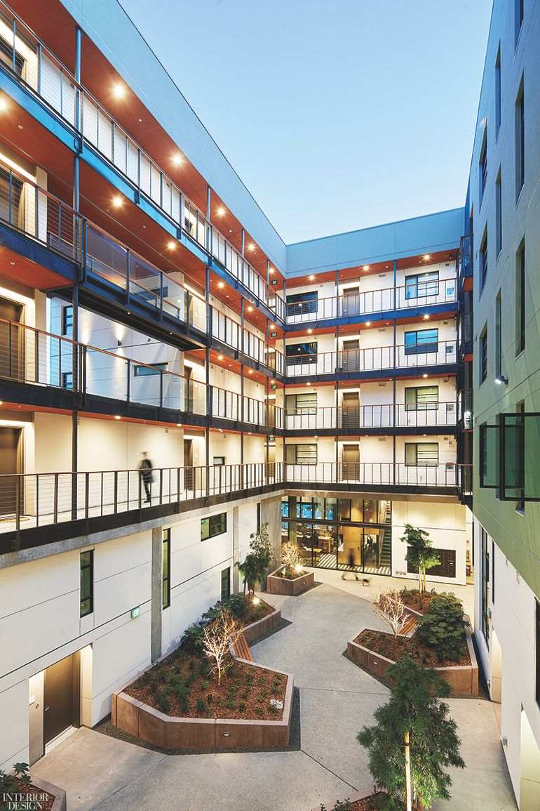

About Moja Constructions
Moja Constructions aims to deliver construction work that is safe, practical and completed to a high standard.

Our Purpose
The company focuses on creating reliable building solutions while maintaining good communication with clients throughout a project.
Our Values
- Quality workmanship
- Professional service
- Reliability
- Safety
- Client satisfaction
Our Target Audience
The website is aimed at homeowners, property developers, business owners and organisations looking for construction or renovation services in South Africa.